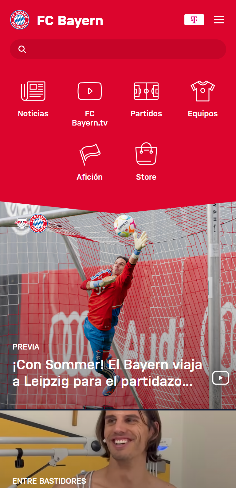

Clean Design:
Bayern Munchen Official:

Starting from the point at which users do not read the pages but rather scan them, it is very important not to saturate them with all the information at once. Iconography helps a lot in decision making, making the user understand what decision to make without having to read too much about it and going directly to the point they need or want to access.
The official website of the FC Bayern Munchen soccer team is a good example where the use of options and images for user selection is simplified. Interact directly with the links and images to go to the information you need or require.
White Space and Clean Design:
PayPal:
 PayPal's website provides the space and ease of using white. The spaces and the focus generated by the most important texts provide a mix of hierarchy as well, giving the reader the opportunity to search for information among the good distribution of spaces, as well as in the visual optimization of the elements used to access the required options.
PayPal's website provides the space and ease of using white. The spaces and the focus generated by the most important texts provide a mix of hierarchy as well, giving the reader the opportunity to search for information among the good distribution of spaces, as well as in the visual optimization of the elements used to access the required options.With the clean design, it is easier to use other elements with preferably soft colors, where they will stand out more, as is the case of the first blue window with faded elements to generate focus in the hero image.
Alignment:
Netflix:
All web designs are governed by alignment. Although it may seem simple, alignment has certain resources that, if not handled correctly, can throw a web page into complete chaos.
The Netflix website provides aesthetics in the distribution of text and image elements. The links and so on are perfectly placed to provide a good user experience.